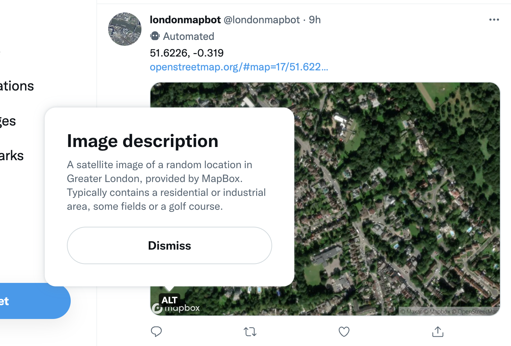

londonmapbot_token <- rtweet::rtweet_bot(
api_key = Sys.getenv("TWITTER_CONSUMER_API_KEY"),
api_secret = Sys.getenv("TWITTER_CONSUMER_API_SECRET"),
access_token = Sys.getenv("TWITTER_ACCESS_TOKEN"),
access_secret = Sys.getenv("TWITTER_ACCESS_TOKEN_SECRET")
)
tl;dr
Version 1.0 of the {rtweet} package has been released with breaking changes. I’ve updated the R script of londonmapbot so that its scheduled GitHub Action doesn’t fail.
Note
londonmapbot no longer posts to Twitter due to API changes. It can be found on Mastodon instead at botsin.space/@londonmapbot. You can read about that in a more recent post.
New hymn sheet
I wrote a Twitter bot a while ago called londonmapbot. See the recent talk at LondonR or the blogpost about its inception.
Basically, an R script runs on schedule via a GitHub Action. It generates a random point in Greater London and pulls a corresponding satellite image from MapBox. The picture, the coordinates and an OpenStreetMap link are then posted to Twitter with the {rtweet} package.
I updated recently the R script in the londonmapbot source code due to some breaking changes in {rtweet}, which Lluís Revilla Sancho recently bumped to the landmark version 1.0. Congratulations!
Change your tune
I made two major changes to the londonmapbot R script given {rtweet} v1.0:
- I used
rtweet_bot()to authorise with the Twitter API, instead ofcreate_token() - I provided alt text with the
media_alt_textargument topost_tweet()
Other folks who use the same approach as londonmapbot will likely need to make these fundamental changes as well.1
I also made a third change—to specify the filetype of the downloaded MapBox image—that will only be relevant if you forked londonmapbot or if your tweets use a downloaded image.
1. Authentication
You need to authenticate with the Twitter API before a tweet can be posted.
Prior to {rtweet} v1.0 you provided your tokens and keys in the create_token() function, but this will now fail with the error create_token() was deprecated in rtweet 1.0.0..
There are now three options for passing tokens and keys, depending on the need: rtweet_app(), rtweet_user() and rtweet_bot(). The last of these is what we need, because:
[It] authenticates a bot that takes actions on behalf of an app [which] is most appropriate if you want to create a Twitter account that is run by a computer, rather than a human
As with create_token(), we still need to provide the api_key, api_secret, access_token and access_secret. As outlined in the first londonmapbot blogpost, these can be stored as named secrets in the GitHub repo itself and called into the environment with Sys.getenv().
So, I changed the R code to this:
Where it was previously this:
londonmapbot_token <- rtweet::create_token(
app = "londonmapbot",
consumer_key = Sys.getenv("TWITTER_CONSUMER_API_KEY"),
consumer_secret = Sys.getenv("TWITTER_CONSUMER_API_SECRET"),
access_token = Sys.getenv("TWITTER_ACCESS_TOKEN"),
access_secret = Sys.getenv("TWITTER_ACCESS_TOKEN_SECRET")
)Note that you no longer need to pass the app name as an argument and that you use api_* rather than consumer_* in the arguments.
2. Alt text
You can no longer post an image without alt text, which is a positive move for the package. If you try to upload without alt text, you’ll get Error: Media and alt_text must be character vectors.
To add alt text, you must add the argument media_alt_text to the post_tweet() function.
Since the sampled location is different in every londonmapbot tweet, it’s not ideal to provide a single blanket statement for all images that are returned from MapBox. Sometimes the image will contain an airport, sometimes the Thames, usually a golf course.
For now I’ve settled on a fixed string that will be posted as the alt text for every image. This is better than nothing, but should be improved so that it’s more dynamic.
Maybe we could infer something from the average colour of the image (I wrote about this before) or maybe predict what the terrain is, given there’s plenty of training data from old londonmapbot tweets.
Regardless, I added alt text to the code like this:
alt_text <- paste(
"A satellite image of a random location in Greater London,",
"provided by MapBox. Typically contains a residential or",
"industrial area, some fields or a golf course."
)
rtweet::post_tweet(
status = latlon_details,
media = temp_file,
media_alt_text = alt_text,
token = londonmapbot_token
)Where it was previously like this:
rtweet::post_tweet(
status = latlon_details,
media = temp_file,
token = londonmapbot_token
)See the image at the top of this blogpost for an example of the alt text now provided to each londonmapbot tweet.
3. File extension
The R script behind londonmapbot downloads a MapBox satellite image to a temporary file created with tempfile(). It was always bad practice to omit the argument fileext = ".jpeg" from this function, which is used to provide a file extension to the temporary filepath of the downloaded image.
I noticed that the absence of an explicit file extension seemed to be causing an error in the execution of the R script, so I made sure to change the code to this:
temp_file <- tempfile(fileext = ".jpeg")
download.file(img_url, temp_file)From this:
temp_file <- tempfile()
download.file(img_url, temp_file)A subtle change, but a necessary one. You may need to do this too if you followed what londonmapbot was doing previously.
Rest
This post may not have impacted you if you aren’t the in niche user group of ‘people who may have forked or used a repo template for londonmapbot to adapt and make their own Twitter bot based on {rtweet} and GitHub Actions, or otherwise used it as inspiration to create their own bot’.2
But it’s worth recording this in long-form in case you ever come across the sorts of {rtweet} errors I’m talking about here.
Environment
Session info
Last rendered: 2023-07-17 18:12:01 BSTR version 4.3.1 (2023-06-16)
Platform: aarch64-apple-darwin20 (64-bit)
Running under: macOS Ventura 13.2.1
Matrix products: default
BLAS: /Library/Frameworks/R.framework/Versions/4.3-arm64/Resources/lib/libRblas.0.dylib
LAPACK: /Library/Frameworks/R.framework/Versions/4.3-arm64/Resources/lib/libRlapack.dylib; LAPACK version 3.11.0
locale:
[1] en_US.UTF-8/en_US.UTF-8/en_US.UTF-8/C/en_US.UTF-8/en_US.UTF-8
time zone: Europe/London
tzcode source: internal
attached base packages:
[1] stats graphics grDevices utils datasets methods base
loaded via a namespace (and not attached):
[1] htmlwidgets_1.6.2 compiler_4.3.1 fastmap_1.1.1 cli_3.6.1
[5] tools_4.3.1 htmltools_0.5.5 rstudioapi_0.15.0 yaml_2.3.7
[9] rmarkdown_2.23 knitr_1.43.1 jsonlite_1.8.7 xfun_0.39
[13] digest_0.6.31 rlang_1.1.1 fontawesome_0.5.1 evaluate_0.21 Reuse
CC BY-NC-SA 4.0